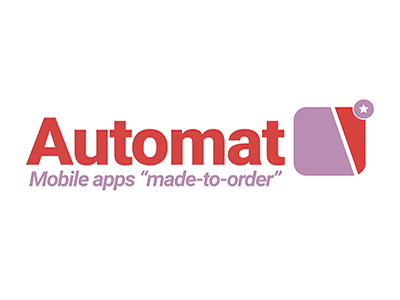

Automat - Mobile apps "made-to-order"

Project Goals
The goal for this project was to create a brand identity for a tech startup.
Inspirations
The name and visual design are inspired by the mission of the client company. They build custom mobile apps for their customers. The logo is designed to resemble a new mobile app with a little “star” badge that appears in the corner of apps in some contexts.
Targeted Audience
The brand identity is designed to be attractive to small businesses who want to project a more professional and cohesive image, but aren’t sure where to start.
Skills/Techniques/Programs used
The logo, along with most of the project, were designed with Adobe Illustrator. The website mock-up was created with InDesign. The color scheme is intentionally low-contrast, giving a “flat” and modern appearance. I tried different color combinations, including higher contrast combinations. The flat “red and purple” scheme seemed to accomplish the objective of being striking and modern. I used as few colors as possible, trying to maintain consistency throughout the documents.
The icons were actually created by a designer who goes by “Eucalypt,” whose work is available from flaticon.com. I simply changed the colors of the icon to match the theme.
Client Profile
The client is completely fictional. The identity is based on a brief description of a tech startup who wants to project a modern and professional image. “Automat” is named after a kind of fast food restaurant where the walls are filled with vending machine-like slots with ready-made meals. It’s not common in the USA anymore, but I think they are still found in other countries.